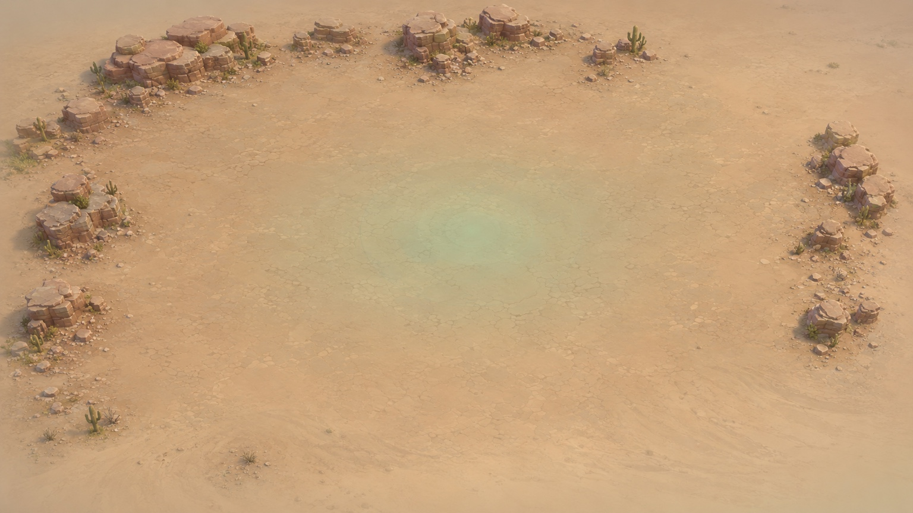
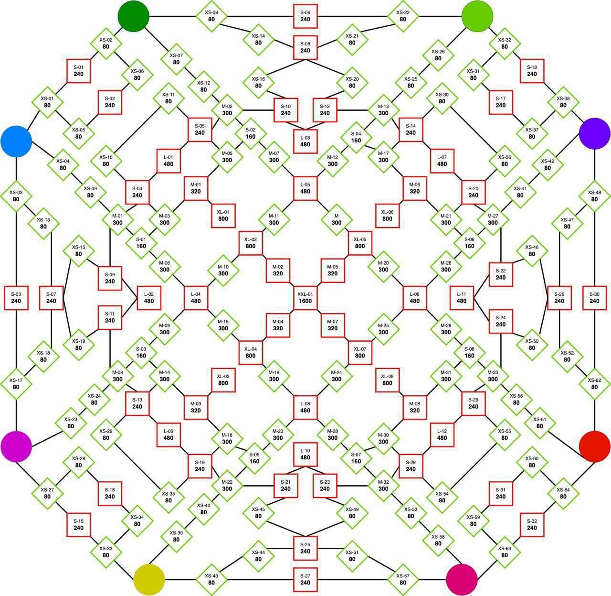

Время по UTC
Сейчас:
Время сервера
Ваш лучший помощник для Tiles Survive
Сейчас:
Время сервера
Расписание появится позже.
СкороРасписание появится позже.
СкороРасчёты пока недоступны. Разделы будут появляться постепенно.
Расчёты пока недоступны.
Первые шаги и развитие поселения
Подготовка к боям и событиям
Нефть, ДНК и медь
Разделы подготовлены. Статьи будут добавлены позже.
Подготовлено оформление. Данные союза и совместное редактирование пока не подключены.
Расписание ещё не внесено
Расписание ещё не внесено
Задач пока нет. Сохранение будет подключено позже.
События для выбранной даты пока не добавлены.
Совет дня
Здесь появятся советы по развитию и союзным событиям.
Вход и сохранение игровых данных пока недоступны.
Расчёты будут доступны после добавления этого раздела.

Нажмите на локацию, чтобы открыть её плашку.
Участники появятся после подключения союза.
Сохранение и назначение игроков пока недоступны.

Для этого ресурса требуется отдельная карта.
Схема нефти — ваше изображение, без изменений. Её можно двигать пальцем и масштабировать двумя пальцами. Интерактивные территории и скрытие подписей будут добавлены вместе с векторной картой.
Союзы события ещё не добавлены.
Итоги появятся после ввода данных события.
Расходы пока не внесены.
Здесь появятся сохранённые изменения карты и якорей: дата, автор и действие.
Доступ пока не подключён. В рабочей версии один редактор будет изменять событие, остальные — видеть последнее сохранённое состояние.
Состав союза пока не подключён.
Статистика союза пока не подключена.